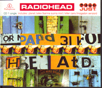
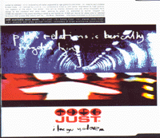
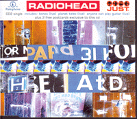
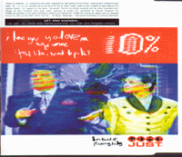
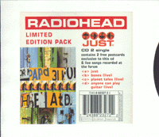
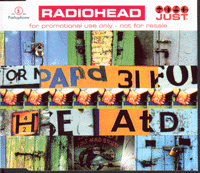
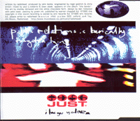
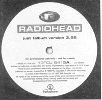

|

|
Catalog # : CDRS 6415
Reference # : 7243 8 82326 2 3
Released 08/07/95
Track Listing :
<1> Just
<2> Planet Telex (Karma Sunra Mix)
<3> Killer Cars (Mogadon Version)
Also available in :
Cassette : TCR 6415
12" : 12R 6415
12" PROMO : 12RDJ 6415

|

|
Catalog # : CDR 6415
Reference # : 7243 8 82327 2 2
Released 08/07/95
Track Listing :
<1> Just
<2> Bones (live)
<3> Planet Telex (live)
<4> Anyone Can Play Guitar (live)
Live tracks recorded live at the Forum in London. In bonus you get 2 Radiohead postcards. (1 and 2)

|

Catalog # : RHEADU.S.1
Reference # : ?
Released ??/??/96
Track Listing :
<1> Just
<2> India Rubber
<3> Maquiladora
<4> How Can You Be Sure ?
<5> Just (live)
Just recorded live at the Forum in London
Dutch
Catalog # : ?
Reference # : 7243 8 82371 2 3
Released ??/??/??
Track Listing :
<1> Just
<2> Bones (live)
<3> Planet Telex (karma sunra mix)
<4> Killer Cars (modagon version)

Catalog # : ?
Reference # 7243 8 82372 2 2 :
Released ??/??/96
Track Listing :
<1> Just
<2> Bones (live)

|

|
Catalog # : CDRDJ 6415
Reference # : ?
Released 07/31/95
Track Listing :
<1> Just (edit)
<2> Just

|
Catalog # : 12RDJ 6415A
Reference # : ?
Released 08/??/95
Track Listing :
<1> Just
<2> Planet Telex (karma Sunra Mix)
<3> Killer Cars (Mogadon mix)
Catalog # : SPCD 1941
Reference # : ?
Released ??/??/95
Track Listing :
<1> Just
{kind=link}
{kind=link}